PFC 中的面片墙
如“模型组件（Model Components）”中所述，PFC 模型由体组成，体之间通过力学接触相互作用。 面片墙是由 n 个面片构成的三角形网格所组成的体 \(\{F^{(i)}\}, i = 1, 2, ..., n\)。每个面片都是一个部件。第 \(i\) 个三角形面片由一个面构成，该面以三条边 \(\left\{E^{(i)}_k\right\}, k=1...3\) 为边界（见下文 图 1（Figure 1））。各条边终止于称为顶点 \(\left\{V^{(i)}_k\right\}, k=1...3\) 的点。确定一个面片的三个顶点必须互不相同。边向量定义为 \(\textbf{E}^{(i)}_1 = V^{(i)}_2 - V^{(i)}_1\)、\(\textbf{E}^{(i)}_2 = V^{(i)}_3 - V^{(i)}_2\) 和 \(\textbf{E}^{(i)}_3 = V^{(i)}_1 - V^{(i)}_3\)。顶点按如下方式排序：使面片的法向 \(\textbf{n}^{(i)}\) 由右手定则确定，
PFC 假定墙体所有面片的法向均与相邻面片、或与共享公共边或顶点的面片保持一致。 （例如，沿面片化墙体正上方/正下方穿行的点，位于最靠近穿行点的面片上方/下方，但靠近墙体边界时除外。） 定义从面片 \(i\) 到空间中任意点 \(P\) 的有符号距离为 \(sd = \textbf{n}^{(i)} \cdot \left(P - P^{(i)}\right)\)，其中 \(P^{(i)}\) 是面片平面上的任意点。 距离 \(sd\) 是有符号的距离，即对于位于面片上方（下方）的点，\(sd > 0 \ (sd < 0)\)； 与面片共面的点，\(sd = 0\)。 墙体数据结构能够高效地识别相邻面片，即共享边或顶点的面片。 面片化墙体可用于表示封闭或有界开放表面，这些表面可以有面片缺失，也可以没有。 此外，球颗粒/刚性簇与墙面片之间允许存在较大的重叠。 请注意，面片不得包含内部孔洞；同一墙体的面片也不得相互相交。 与以往 PFC 的墙体实现不同，墙体默认在所有侧面上均处于活动状态（例如，从非活动侧接近面片的球颗粒不会与这些面片发生相互作用）。 用户可将单个面片标记为在其任一侧或两侧为非活动。 注意：当球颗粒或子颗粒从墙面片的非活动侧迁移到活动侧时，程序不会采取任何措施来阻止其承受较大的力。 在此类情形下可能产生不切实际的速度。

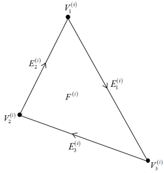
图 1：从上方观察的墙面片示意图。
墙体的运动不服从运动方程。 墙体运动既可以是刚性的，也可以是可变形的，但不能同时兼具二者。 启用刚性墙体运动时，用户可以指定墙体的平动速度 \(\textbf{v}\) 和转动速度 \(\textbf{w}\)，以及转动参考点 \(W_r\)。 旋转的实现方式是将所有顶点平移，使 \(W_r\) 成为原点（平移量为 \(-W_r\)）； 再由四元数 \(q(1, w_x\Delta t,w_y\Delta t, w_2\Delta t)\) 的归一化形式构造旋转矩阵，其中 \(\Delta t\) 为时步。 随后将该旋转矩阵施加于所有顶点，这些顶点再平移 \(W_r\)，到达其最终的旋转后位置。 采用四元数方法是为了避免万向节死锁，即在使用欧拉角时可能出现的自由度丧失。 启用可变形墙体运动时，用户可以指定面片化墙体中每个顶点的平动速度 \(\left\{\textbf{v}^{(i)}\right\}, i = 1, 2, ..., m\)（\(m\) 为唯一顶点的数目）。 所指定的顶点速度必须在任何时刻都保持面片互不相交。 在所有情况下，作用在墙体上的总力和总力矩（由 \(\textbf{F}\) 和 \(\textbf{M}\) 定义，即作用在每个力学接触处的力和力矩之和） 都会被存储。
力学相互作用在概念上存在于物体之间；相互作用可以存在于墙体与其他类型的物体（球颗粒或刚性簇）之间。 用户无法访问相应的数据结构，但为清晰起见仍在此对其进行描述。 在 PFC 中不允许存在墙与墙之间以及墙体内部的力学相互作用。 换言之，墙体不会与其他墙体发生相互作用。 两个不同物体之间只能存在一个力学相互作用，但这些物体的组成部件之间可以存在多个力学接触。 因此，力学相互作用相当于一个容器，存储组成部件之间的接触列表，以及所有相关接触的合力与合力矩。 当物体充分接近/分离时，力学相互作用会由接触检测逻辑创建/销毁。 邻近检测借助以下方式实现：将物体的每个组成部件抽象为一个范围（例如， 如图 2（Figure 2）所示的轴对齐包围盒）。 接触检测方案还会在范围相互重叠的部件之间创建/销毁接触。 请注意，部件之间只能存在一个活动的力学接触——例如，球颗粒与墙面片之间（包括共享的面片边/顶点）。 如“模型组件（Model Components）”所述，最小范围可以以用户可控的方式放大，以确保在不同物体的部件相交之前创建相互作用/接触。

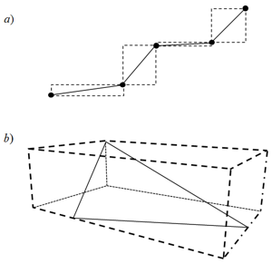
图 2：a) 二维和 b) 三维中包围面片化墙体的最小范围。a) 中的黑点对应墙体的边。本文档通篇采用二维图示。
面片化墙体接触求解
墙与球颗粒或刚性簇之间可存在力学相互作用。由于球颗粒与刚性簇均由球形片段构成， 以下讨论将不失一般性地聚焦于球颗粒 - 墙之间的力学相互作用。 此外，以下术语相互作用与接触仅指力学相互作用 / 接触。 接触检测过程中，一旦球颗粒的包络与墙的至少一个面片包络重叠，即创建一个相互作用。该相互作用保存墙与球颗粒之间所有 接触的列表。球颗粒与每个包络与其重叠的面片之间都存在接触。 接触求解是确定接触几何与接触条件的过程。将墙接触点 定义为面片上与球颗粒存在球颗粒 - 面片接触、且距球颗粒形心最近的点（图 3（Figure 3））。 PFC 采用一种高效算法， 以参数形式投射三角形面片，从而识别每个墙接触点， 包括明确判定该点位于面片的哪个区域（例如：位于面片面上，位于 3D 中三条边 / 顶点 之一（2D 中为 2 条边 / 顶点））。假设接触检测逻辑已识别出 \(l\) 个接触，且 墙接触点 \(WP_{i}, i = 1...l\) 已计算完毕。此外，假设这些接触已 按重叠量递减的顺序排列。接触 \(i\) 的单位法向方向由球颗粒形心 \(\textbf{x}\) 指向墙接触点，其表达式为
其中 \(d_i = \Vert WP_i - \textbf{x} \Vert\) 为球颗粒形心到墙接触点 \(WP_i\) 的无符号距离。球颗粒与相应墙面片之间的法向重叠量为 \(U^{B,W}_i = R - d_{i}\)，其中 \(R\) 为球颗粒半径。当 \(U^{B,W}_i > 0\) 时接触为活动状态，否则为非活动状态，除非接触模型 规定了不同的非活动条件。接触点 （用于绘图及相对速度 / 位移计算）的位置由下式给出

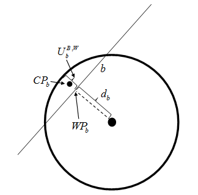
图 3：重叠量 \(U^{B,W}_{b}\)、墙接触点 \(WP_{b}\) 与接触点 \(CP_{b}\) 的定义，对应与面片 \(b\) 的接触。
在某些情形下，多个接触同时处于活动状态可能并不理想。假设一个球颗粒与 勾勒平面墙的大量面片重叠（图 4a（Figure 4a））。若与 \(U^{B,W}_{i} > 0\) 的所有接触均为 活动状态，则等效法向和剪切接触刚度将是球颗粒 与单个面片重叠情形下接触刚度的许多倍（图 4b（Figure 4b））。这种行为并不理想，因此采用一种关联逻辑来 确定接触的活动状态。假设在球颗粒与墙面片之间的接触检测中 已识别出接触 \(C_a, C_b, C_c, C_d\)，其对应的墙接触点分别为 \(WP_a, WP_b, WP_c, WP_d\)。 所有这些接触都是活动的（例如 \(U^{B,W}_a, U^{B,W}_b, U^{B,W}_c, U^{B,W}_d > 0\)）。假设按任意顺序 \(C_d, C_a, C_b, C_c\) 遍历接触列表。例如，从接触 \(C_d\) 开始，可以发现 \(WP_d\) 落在面片 \(c\) 与 \(d\) 共用的边上；\(C_d\) 被视为活动接触，并在 \(C_d\) 与 \(C_c\) 之间创建一个 链接。接触之间的这种链接之所以产生，是因为某个墙接触点位于 这两个面片共用的边上，且 \(U^{B,W}_{d} > 0\)。转到 \(C_a\)，可以发现 \(WP_a\) 落在面片 \(a\) 与 \(b\) 共用的边上；\(C_a\) 被视为活动接触，并与 \(C_b\) 建立链接，因为 \(U^{B,W}_{a} > 0\)。 接着转到 \(C_b\)，可以发现存在指向 \(C_a\) 的链接，且 \(WP_b\) 位于面片 \(b\) 的面上。这种 链接表明 \(C_a\) 或 \(C_b\) 之一可能为活动接触；条件 \(U^{B,W}_{b} > U^{B,W}_{a}\) 规定 \(C_b\) 为活动接触，而 \(C_a\) 被视为非活动接触。检查 \(C_c\) 时，需要 在 \(C_c\) 与 \(C_d\) 之间创建链接，且 \(U^{B,W}_{c} > U^{B,W}_{d}\)，因此 \(C_d\) 被视为非活动接触。 此外，\(WP_c\) 位于与面片 \(b\) 共用的边上，且 \(U^{B,W}_{c} > 0\)，因此在 \(C_c\) 与 \(C_b\) 之间创建链接。不过在此情形下，\(U^{B,W}_{b} > U^{B,W}_{c}\)，因此 \(C_c\) 同样为非活动接触。这些 链接在 图 4c（Figure 4c） 中以卷曲箭头表示。球颗粒 - 面片接触的关联式接触求解策略 可得到预期结果，即仅有一个活动接触，也就是 \(C_b\)。该方案的规则可 归纳如下：1）球颗粒与墙面片之间只能存在一个活动接触，包括共用边和 顶点上的情形；2）球颗粒与相邻面片之间的接触，若其墙接触点位于共用边或顶点上，则建立链接， 前提是法向重叠量大于 0；3）链接集合中重叠量最大的接触是唯一的 活动接触。

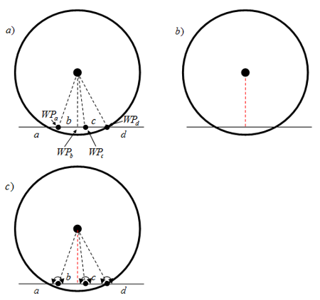
图 4：自左上起：a）球颗粒与共面墙段重叠，墙接触点由虚线与墙面片的交点标示。b）球颗粒与单个墙面片重叠。红色虚线为活动接触。c）与 a）相同，只是接触之间的链接以卷曲的双箭头表示，且红色虚线对应与面片 \(b\) 的活动接触。
将本算法应用于球颗粒穿过墙体、朝向凸棱边运动的情形，如 图 5（Figure 5） 所示。 为演示该算法的用法，已将墙体划分为多个面片。图 5a（Figure 5a） 显示， 与面片 \(c\)、\(C_c\) 的接触处于活动状态，并链接到非活动的 \(C_b\) 和 \(C_d\)。 此外，\(C_a\) 处于非活动状态，并链接到 \(C_b\)。在 图 5b（Figure 5b） 中，\(C_c\) 仍保持活动，并 链接到非活动接触 \(C_d\) 和 \(C_b\)。灰色区域是球颗粒越过与面片 \(c\) 和 \(d\) 共享的棱边的 区域。在此过程中（图 5b（Figure 5b） 与 图 5c（Figure 5c）），接触法向平滑旋转，\(C_c\) 继续保持活动。一旦越过 共享棱边（图 5d（Figure 5d）），\(C_d\) 变为活动状态，并链接到非活动的 \(C_c\) 和 \(C_e\)。\(C_e\) 也链接到 \(C_f\)，而后者处于非活动状态。

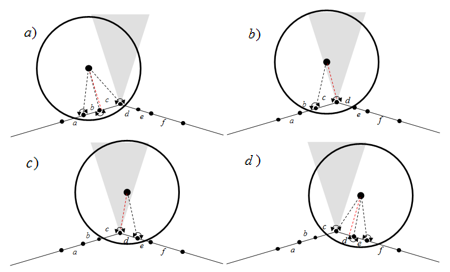
图 5：自左上角起：a) 球颗粒接近面片的凸棱边。链接以卷曲的双箭头表示。灰色区域对应于棱边正上方的区域。活动墙体接触点位于红色虚线的端点。黑色虚线终止于非活动的墙体接触点。b) 活动墙体接触点落在面片 \(c\) 与 \(d\) 之间的共享棱边上。c) 接触法向自然地迁移通过棱边上方的区域。d) 接触的活动状态越过棱边上方的区域。
将该算法应用于球颗粒朝凹棱边运动的情形，其性能在 图 6（Figure 6） 中给出。图 6a（Figure 6a） 给出了球颗粒尚未开始与 相对墙体面片重叠的情形。在 图 6b（Figure 6b） 中，该算法产生两个活动接触，即 \(C_c\) 和 \(C_d\)。出现这种情况是因为这些接触之间没有链接，原因是墙体接触点并不位于共享棱边或 顶点上。随着球颗粒继续平移，\(C_e\) 成为唯一的活动接触（图 6c（Figure 6c））。当 该算法应用于名义上平整、但粗糙度所在长度尺度远小于球颗粒尺寸的墙体情形时（如 图 7（Figure 7） 所示），它会在最靠近 球颗粒质心的每个面片棱边/顶点处产生活动接触。这种墙体构型会使球颗粒与墙体之间的接触相互作用显著变刚，因为球颗粒 同时与多个面片棱边相互作用。尽管在某一尺度下观察时该墙段是平整的，但应用关联算法后，其行为并不 与 图 4（Figure 4） 所示的算例相同。关联逻辑的 实施可通过按重叠量递减的顺序排列接触而变得方便；一旦对所有重叠量为正的接触完成上述检查，关联检查便 终止。如上所述，关联逻辑同时包含在“reduced”和 “full”接触求解模式中。

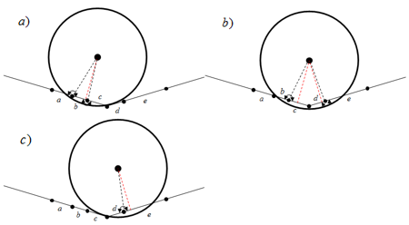
图 6：自左上角起：a) 球颗粒接近面片的凹棱边。线条约定的说明见上一图。 b) 两个活动接触的墙体接触点（红色虚线的端点）分别落在凹棱边的两侧。 c) 仅剩一个活动接触。

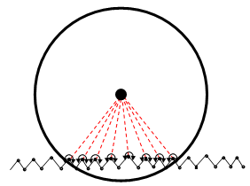
图 7：球颗粒与名义上平整、粗糙度小于球颗粒尺寸的墙体发生重叠。
关联逻辑无法产生预期行为的两种情形如 图 8（Figure 8） 所示。在 图 8a（Figure 8a） 中，球颗粒与一处薄条区域重叠，而该处接触之间不存在 链接。在 图 8b（Figure 8b） 中，球颗粒与同一墙体的多个面片重叠，且不存在任何链接。当 墙体某一特征的尺度远小于球颗粒尺度时，可能出现 这些情形。应用 关联逻辑后，在 图 8a（Figure 8a）（图 8b（Figure 8b））中得到两个（三个）活动接触， 而在这两种情形中，物理上合理的活动接触可能只有一个。通过判断将球颗粒质心与活动接触（由 关联逻辑判定为活动）的墙体接触点相连的线段是否与其他具有活动接触的面片相交，即可检测这类情形。重叠量最大的接触被判定为活动接触。当 尺度相匹配时，此类检查并无必要，且未包含在“reduced”接触求解模式（默认 行为）中。缓解 图 8a（Figure 8a） 中楔形情形的一种替代方法是将楔形的“内侧” 面片设为非活动，从而只得到一个活动接触。不过，这种解决方案无法缓解 图 8b（Figure 8b） 中的情形。建议考虑将墙体特征尺度与球颗粒尺度设置为 相近，以避免出现这些情形。

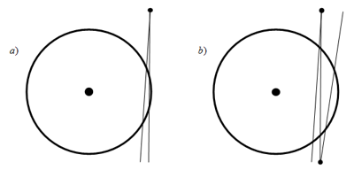
图 8：关联逻辑失效的情形。 a) 球颗粒与薄楔相交，b) 球颗粒与多个区段相交。“full”接触求解模式包含对这种情况的检查，而“reduced”模式则不含该检查。
接触状态信息的连续性
假设采用 PFC 中的默认接触模型，取非零的法向/剪切刚度和非常大的摩擦系数， 以模拟 图 4a（Figure 4a） 和 图 4b（Figure 4b） 所示的两个示例。当 球颗粒沿单一面片平移指定距离并历经众多时步（图 4b（Figure 4b））时， 剪力会逐渐累积。在多面片示例中，当活动接触从一个面片过渡到另一个面片 （图 4a（Figure 4a））时，就必须解决如何强制保持接触状态信息连续性的问题，以便 这两个示例给出完全相同的结果。例如，接触状态信息若不连续，将会导致 球颗粒在此情形下移动时损失剪力。接触状态信息仅在“full”（完全）识别 模式下才会传递。假设在一次接触识别过程中，当接触状态 由活动变为不活动（例如接触法向、墙接触点、接触点、力、力矩等）时保留了接触状态信息。取 图 9a（Figure 9a） 和 图 9b（Figure 9b） 所示的构型对应于模型 在时刻 \(t\)（\(t + 1\)，或增加一个时步）的状态。\(C_b\) 在时刻 \(t\) 为活动，而 \(C_d\) 在时刻 \(t + 1\) 为活动。再假设墙的面片法向分别由 \(\textbf{n}_b\) 和 \(\textbf{n}_d\) 给出，分别对应面片 \(b\) 和 \(d\)。这些面片法向向量之间的夹角由 \(\theta = \arccos(\textbf{n}_b \cdot \textbf{n}_d)\) 给出。设用户针对某一特定墙的所有墙相互作用定义截止角 \(\Theta \geq 0\)， 若 \(\theta \leq \Theta\)，且所讨论的两个面片之间不存在 孔洞， 则传递非几何的接触状态信息（例如，所有信息均传递，但法向、墙接触 点、接触点等 不传递）。每种接触模型都定义了接触状态信息的传递过程，而 该状态信息只能在采用相同接触模型的接触之间传递。对于 linearbond 接触 模型，力与力矩会累加到当前已存储的数值上。术语“孔洞”用于定义两种情形：1） 无法借助面片相邻信息在两个面片之间构造出连续路径，且该路径上的每个面片都必须 与包含后续时步墙接触点 \(WP_b\) 和 \(WP_d\) 的平面相交，并且其法向 垂直于平均接触法向；或者 2）\(\textbf{n}_b\) 与路径上某个面片之间的夹角 大于 \(\Theta\)。在本例中，\(\theta = 0\)，并且可由面片 \(b \rightarrow c \rightarrow d\) 构造出无孔洞的连续路径；因此接触状态信息会从 \(S_b\) 复制到 \(S_d\)。

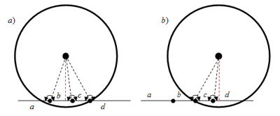
图 9：自左向右：a) 展示如 图 4a（Figure 4a） 所示的墙体穿越共面面片情形，时刻为 \(t\)；b) 展示时刻 \(t + 1\) 的构型。
关联逻辑被用作路径构造的替代手段。若在先前的活动接触与 由接触识别方案判定为活动的接触之间不存在任何链接，则接触状态信息不会被传递。 例如，下一幅图所示的各种情形由于采用了关联逻辑，无需任何直接的路径构造 即可轻松处理。

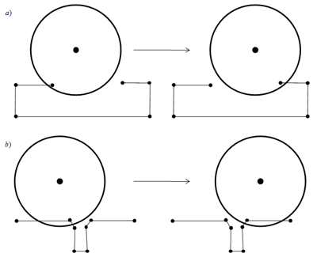
图 10：说明孔洞检查必要性的两个情形。箭头两侧的构型相差一个时步。
凹边处接触状态信息的连续性——邻近接触
假设球颗粒逼近一条凹边，如 图 6a（Figure 6a） 所示。将这些快照视为一次模拟的相继 时步。应用上一节所述的算法后，接触状态 信息会从 \(C_b\) 复制到 \(C_c\)，以对应 图 6b（Figure 6b） 中的构型。假设 \(\arccos(\textbf{n}_b \cdot \textbf{n}_d), \arccos(\textbf{n}_c \cdot \textbf{n}_d) \leq \Theta\)。此时并不 向 \(C_d\) 传递任何状态信息。在 图 6c（Figure 6c） 中，\(C_c\) 已变为不活动， 而按照上文给出的规则，其关联的接触状态信息已经丢失。为满足跨越凹面片棱边 保持状态信息连续性的需求，对该算法补充如下规则：任意两个活动 接触，若其面片法向之间的夹角小于 \(\Theta\)（\(C_d\) 和 \(C_d\) 位于 图 6b（Figure 6b） 中），则合并为单个活动 邻近接触。只有邻近接触（PC） 累积力/力矩。PC 的法向等于重叠加权法向，例如，
其重叠量等于平均重叠量。一旦创建了邻近接触，就会检查与 该邻近接触所包含面片相邻的面片上的接触是否应纳入该邻近接触。因此，与 邻近接触所包含面片相邻的面片上的接触，只要满足 1）重叠量为正，并且 2）其面片法向与邻近接触中任一面片 法向之间的最小夹角满足条件，就会被加入该邻近接触。一旦某个接触的重叠量变为负值，该接触 就会从邻近接触中移除。

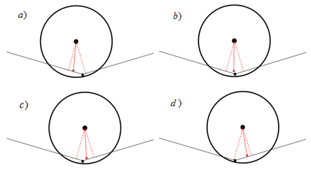
图 11：球颗粒穿越凹面片棱边的构型。未应用 PC 逻辑时，红色虚线终止于各活动接触的墙接触点。应用该逻辑时，红色实线终止于 PC 的墙接触点。
PC 逻辑也会影响 图 7（Figure 7） 所示示例最终形成的接触构型。 应用该算法会显著减少活动接触的数量，具体取决于 用户所赋的 \(\Theta\) 值。
| 这些内容对您有帮助吗？… 版权与免责声明 |
FLAC3D © 2019, Itasca | 原文更新于 2020 年 10 月 8 日 |